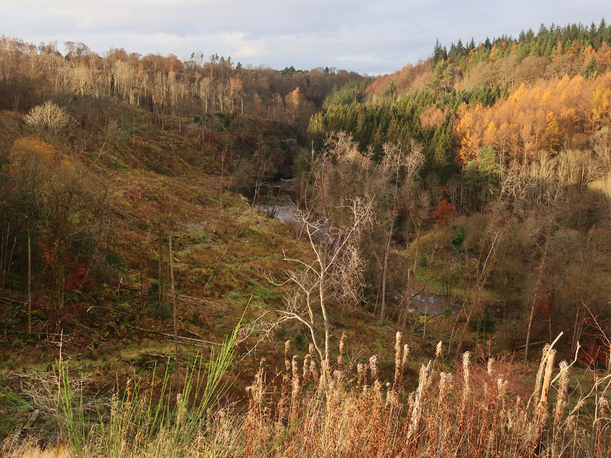
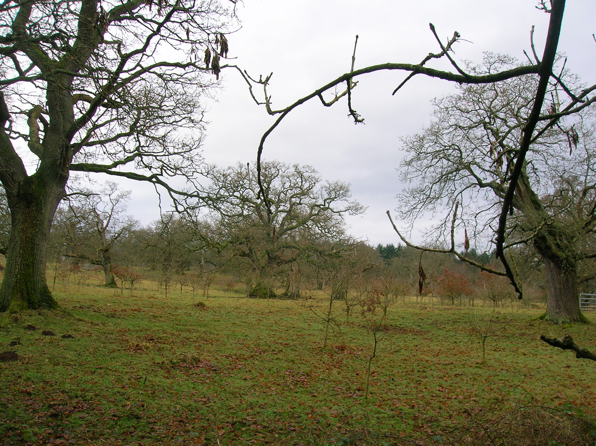
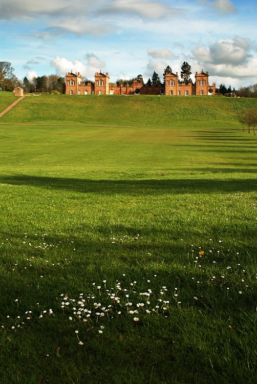
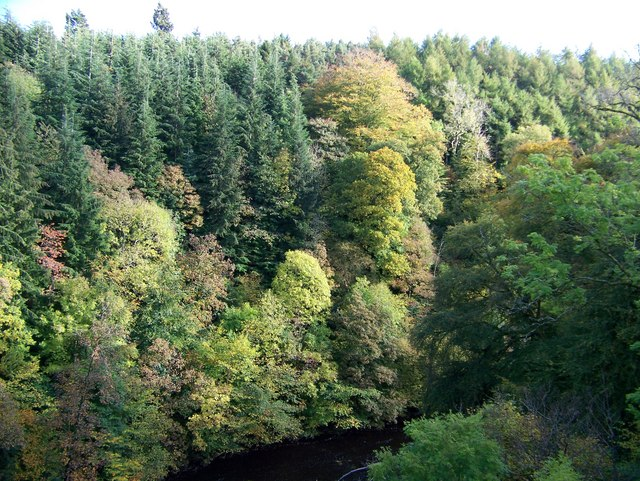

Hamilton, South Lanarkshire
Chatelherault Grounds
Chatelherault Country Park combines designed estate landscapes, ancient woodland, and deep river-gorge terrain in one of the most distinctive historic park settings near Glasgow.
Overview

Chatelherault sits near Hamilton in South Lanarkshire and spans around 500 acres. The park is widely known for blending scenic walking country with layers of local history, from medieval associations around Cadzow Castle to 18th-century estate planning around the hunting lodge.
Today, the landscape is managed as a public country park with routes through woodland, open grassland, and viewpoints over the Avon Gorge.
Grounds

The grounds combine formal estate geometry and natural terrain. Open areas and long sightlines reflect 18th-century landscape design, while the gorge woodland offers steep, winding routes and contrasting habitat.
The Avon Gorge is a defining feature of the park, with paths and viewpoints above the river valley. Nearby, the Cadzow Oaks represent one of Scotland's best-known ancient oak wood pastures, with veteran trees that are several centuries old.
Open grazing land remains part of the historic character of the estate, including the park's distinctive white Cadzow cattle. Across the wider park, visitors can choose from easier surfaced paths near facilities and longer woodland walks that are more uneven underfoot.
History

The wider Cadzow area has long royal and noble associations. Tradition links the surrounding woods to early royal hunting activity in Strathclyde, and the Hamilton family later developed the estate into a major power center in Lanarkshire.
The ruins of Cadzow Castle still stand above the Avon Gorge. In the 18th century, the Dukes of Hamilton reshaped the estate and commissioned the hunting lodge at Chatelherault, designed by William Adam and completed in 1734.
Although commonly called a hunting lodge, the building also functioned as a designed focal point within the wider Hamilton estate, with service spaces for kennels, stabling, and accommodation. Following the decline of Hamilton Palace and 20th-century landscape change, the estate gradually shifted from private use to public access.
Major restoration in the late 20th century reopened the park and lodge for public use, and Chatelherault Country Park has operated as a public destination since 1987.
Location and Accessibility

Chatelherault is located in Hamilton, South Lanarkshire, a short distance from Glasgow. It is reachable by road and public transport, including Chatelherault railway station near the park entrance.
This location makes it a practical option for countryside walking, heritage visits, and family day trips from central Scotland.
Visiting Chatelherault Country Park
Visitors come for walking, wildlife, and heritage in one place. The path network includes shorter accessible routes and longer trails through woodland and gorge terrain.
Entry to the park grounds is generally free, though parking or some facilities may carry charges depending on current local arrangements.
Related Guides
Frequently Asked Questions
What is Chatelherault Country Park known for?
It is known for the historic hunting lodge, Cadzow Oaks, Cadzow Castle ruins, and scenic routes through the Avon Gorge and surrounding estate grounds.
Is Chatelherault Country Park free to visit?
Access to the park grounds is generally free. Charges can apply for parking or specific facilities.
How long are the walking routes at Chatelherault?
The route network includes a range of short and longer walks, and published park material commonly references more than 10 miles of waymarked walking routes across the estate.
Fact-check notes
Core facts on this page were cross-checked against the Chatelherault Country Park entry (location, area, 1734 William Adam lodge completion, 1987 public opening, Cadzow Castle setting, and rail access context), and aligned with current public-visitor wording using cautious language where published figures can vary by source.
Photo Credits and Licenses
- Overview photo: "View of the River Avon and the Avon Gorge (geograph 6676841)" by wrobison, CC BY-SA 2.0. Source: Wikimedia Commons.
- Grounds photo: "Cadzow oaks with replanting" by Rosser1954 (Roger Griffith), Public Domain. Source: Wikimedia Commons.
- History photo: "Chatelherault3a" by StaraBlazkova, CC BY-SA 4.0. Source: Wikimedia Commons.
- Location photo: "Avon Gorge - Chatelherault Country Park - geograph.org.uk - 605128" by Elliott Simpson, CC BY-SA 2.0. Source: Wikimedia Commons.